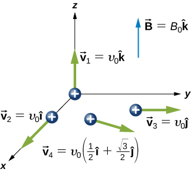
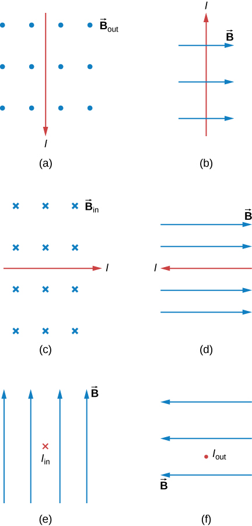
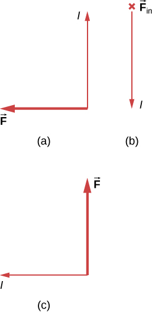
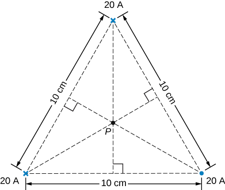
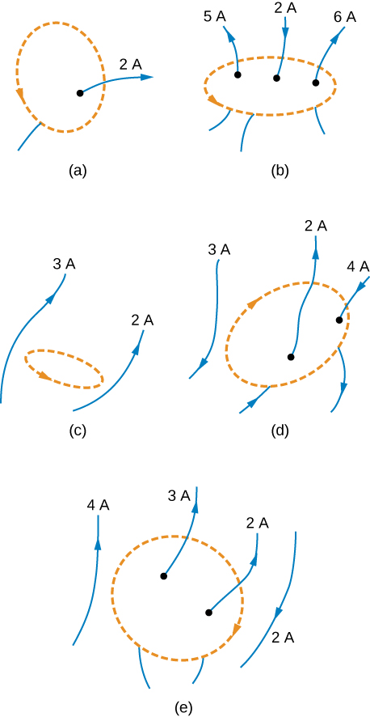
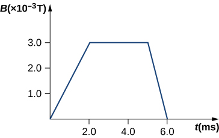
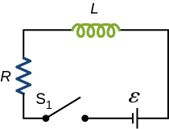

Phy222 Homework 8-11 - Magnetic Field
Homework 8: Magnetic Fields
Problem 8.1
What is the direction of the magnetic force on a positive charge that moves as shown in each of the six cases?

Problem 8.2
What is the direction of the velocity of a negative charge that experiences the magnetic force shown in each of the three cases, assuming it moves perpendicular to B?

Problem 8.3
An electron is projected into a uniform magnetic field \(\mathbf{B} = (0.5\hat{i} + 0.8\hat{k}) \, \mathrm{T}\) with a velocity \(\mathbf{v} = (3.0\hat{i} + 4.0\hat{j}) \times 10^6 \, \mathrm{m/s}\). What is the magnetic force on the electron?
Problem 8.4
Four different proton velocities are given. For each case, determine the magnetic force on the proton in terms of \(e\), \(v_0\), and \(B_0\).

Problem 8.5
Aircraft sometimes acquire small static charges. Suppose a supersonic jet has a \(0.500 \, \mu\mathrm{C}\) charge and flies due west at a speed of \(660. \, \mathrm{m/s}\) over Earth’s south magnetic pole, where the \(8.00 \times 10^{-5} \, \mathrm{T}\) magnetic field points straight down into the ground.
- What are the direction and the magnitude of the magnetic force on the plane?
- Discuss whether the value obtained above implies this is a significant or negligible effect.
Problem 8.6
A cosmic-ray electron moves at \(7.5 \times 10^6 \, \mathrm{m/s}\) perpendicular to Earth’s magnetic field at an altitude where the field strength is \(1.0 \times 10^{-5} \, \mathrm{T}\). What is the radius of the circular path the electron follows?
Problem 8.7
An alpha-particle (\(m = 6.64 \times 10^{-27} \, \mathrm{kg}\), \(q = 3.2 \times 10^{-19} \, \mathrm{C}\)) travels in a circular path of radius \(25 \, \mathrm{cm}\) in a uniform magnetic field of magnitude \(1.5 \, \mathrm{T}\).
- What is the speed of the particle?
- What is the kinetic energy in electron-volts?
- Through what potential difference must the particle be accelerated in order to give it this kinetic energy?
Problem 8.8
What is the direction of the magnetic force on the current in each of the six cases?

Problem 8.9
What is the direction of the magnetic field that produces the magnetic force shown on the currents in each of the three cases, assuming B is perpendicular to I?

Problem 8.10
A dc power line for a light-rail system carries \(1000 \, \mathrm{A}\) at an angle of \(30.0^\circ\) to Earth’s \(5.0 \times 10^{-5} \, \mathrm{T}\) field.
- What is the force on a \(100 \, \mathrm{m}\) section of this line?
- Discuss practical concerns this presents, if any.
Problem 8.11
A $150$-turn square loop of wire \(18.0 \, \mathrm{cm}\) on a side that carries a \(50.0 \, \mathrm{A}\) current in a \(1.60 \, \mathrm{T}\) field?
- What is the maximum torque felt by the loop?
- What is the torque when \(\theta\) is \(10.9^\circ\)?
Problem 8.12
A wire of length \(1.0 \, \mathrm{m}\) is wound into a single-turn planar loop. The loop carries a current of \(5.0 \, \mathrm{A}\), and it is placed in a uniform magnetic field of strength \(0.25 \, \mathrm{T}\).
- What is the maximum torque that the loop will experience if it is square?
- If it is circular?
- At what angle relative to \(\mathbf{B}\) would the normal to the circular coil have to be oriented so that the torque on it would be the same as the maximum torque on the square coil?
Problem 8.13
A proton has a magnetic field due to its spin. The field is similar to that created by a circular current loop of radius \(0.65 \times 10^{-15} \, \mathrm{m}\) with a current of \(1.05 \times 10^4 \, \mathrm{A}\). Find the maximum torque on a proton in a \(2.50 \, \mathrm{T}\) field. (This is a significant torque on a small particle.)
Problem 8.14
A physicist is designing a cyclotron to accelerate protons to one-tenth the speed of light. The magnetic field will have a strength of \(1.5 \, \mathrm{T}\). Determine
- the rotational period of the circulating protons.
- the maximum radius of the protons’ orbit.
Problem 8.15
The magnetic field in a cyclotron is \(1.25 \, \mathrm{T}\), and the maximum orbital radius of the circulating protons is \(0.40 \, \mathrm{m}\).
- What is the kinetic energy of the protons when they are ejected from the cyclotron?
- What is this energy in \(\mathrm{MeV}\)?
- Through what potential difference would a proton have to be accelerated to acquire this kinetic energy?
- What is the period of the voltage source used to accelerate the protons?
- Repeat the calculations for alpha-particles.
Problem 8.16
A velocity selector in a mass spectrometer uses a \(0.100 \, \mathrm{T}\) magnetic field.
- What electric field strength is needed to select a speed of \(4.0 \times 10^6 \, \mathrm{m/s}\)?
- What is the voltage between the plates if they are separated by \(1.00 \, \mathrm{cm}\)?
Homework 9: Continuous Current Distributions
Problem 9.1
A 10-A current flows through the wire shown. What is the magnitude of the magnetic field due to a 0.5-mm segment of wire as measured at point A and point B?

Problem 9.2
The accompanying figure shows a current loop consisting of two concentric circular arcs and two perpendicular radial lines. Determine the magnetic field at point P.

Problem 9.3
Find the magnetic field at the center C of the rectangular loop of wire shown in the accompanying figure.

Problem 9.4
A typical current in a lightning bolt is \(10^4~A\). Estimate the magnetic field \(1~m\) from the bolt.
Problem 9.5
The below figure shows two long, straight, horizontal wires that are parallel and a distance 2a apart. If both wires carry current I in the same direction, what is the magnetic field at P1 and P2?

Problem 9.6
Repeat the calculations of the preceding problem with the direction of the current in the lower wire reversed.
Problem 9.7
Three long, straight, parallel wires, all carrying \(I=20~A\), are positioned as shown in the below figure. What is the magnitude of the magnetic field at the point P?

Problem 9.8
Two long, parallel wires are hung by cords of length \(5.0~cm\), as shown in the accompanying figure. Each wire has a mass per unit length of \(30~g/m\), and they carry the same current in opposite directions. What is the current if the cords hang at \(6.0^\circ\) with respect to the vertical?

Problem 9.9
When the current through a circular loop is \(6.0 \, \mathrm{A}\), the magnetic field at its center is \(2.0 \times 10^{-4} \, \mathrm{T}\). What is the radius of the loop?
Problem 9.10
A flat, circular loop has \(20\) turns. The radius of the loop is \(10.0 \, \mathrm{cm}\) and the current through the wire is \(0.50 \, \mathrm{A}\). Determine the magnitude of the magnetic field at the center of the loop.
Problem 9.11
Evaluate \(\oint \mathbf{B} \cdot d\mathbf{l}\) (line integral) for each of the cases shown in the accompanying figure.

Problem 9.12
A portion of a long, cylindrical coaxial cable is shown in the accompanying figure. A current \(I\) flows down the center conductor, and this current is returned in the outer conductor. Determine the magnetic field in the regions (a) \(r \leq r_1\), (b) \(r_2 \geq r \geq r_1\), (c) \(r_3 \geq r \geq r_2\), and (d) \(r \geq r_3\). Assume that the current is distributed uniformly over the cross sections of the two parts of the cable.

Homework 10: Induction
Problem 10.1
A 50-turn coil has a diameter of \(15 \, \text{cm}\). The coil is placed in a spatially uniform magnetic field of magnitude \(0.50 \, \text{T}\) so that the face of the coil and the magnetic field are perpendicular. Find the magnitude of the emf induced in the coil if the magnetic field is reduced to zero uniformly in
- \(0.10 \, \text{s}\)
- \(1.0 \, \text{s}\)
- \(60 \, \text{s}\).
Problem 10.2
The magnetic field through a circular loop of radius 10.0 cm varies with time as shown below. The field is perpendicular to the loop. Plot the magnitude of the induced emf in the loop as a function of time.

Problem 10.3
A current is induced in a circular loop of radius \(1.5 \, \text{cm}\) between two poles of a horseshoe electromagnet when the current in the electromagnet is varied. The magnetic field in the area of the loop is perpendicular to the area and has a uniform magnitude. If the rate of change of magnetic field is \(10 \, \text{T/s}\), find the magnitude and direction of the induced current if the resistance of the loop is \(25 \, \Omega\).
Problem 10.4
A coil with \(50\) turns and area \(10 \, \text{cm}^2\) is oriented with its plane perpendicular to a \(0.75 \, \text{T}\) magnetic field. If the coil is flipped over (rotated through \(180^\circ\)) in \(0.20 \, \text{s}\), what is the average emf induced in it?
Problem 10.5
A rectangular wire loop with length \(a\) and width \(b\) lies in the $xy$-plane, as shown below. Within the loop there is a time-dependent magnetic field given by \(\mathbf{B}(t) = C \left( x \cos(\omega t) \, \hat{\mathbf{i}} + y \sin(\omega t) \, \hat{\mathbf{k}} \right)\), with \(\mathbf{B}(t)\) in tesla. Determine the emf induced in the loop as a function of time.

Problem 10.6
When a magnetic field is first turned on, the flux through a 20-turn loop varies with time according to \(\Phi_m = 5.0t^2 - 2.0t\), where \(\Phi_m\) is in milliwebers, \(t\) is in seconds, and the loop is in the plane of the page with the unit normal pointing outward.
- What is the emf induced in the loop as a function of time?
- What is the direction of the induced current at \(t = 0\)
- What is the direction of the induced current at \(t = 0.10 \, \text{s}\)
- What is the direction of the induced current at \(t = 1.0 \, \text{s}\)
- What is the direction of the induced current at \(t = 2.0 \, \text{s}\)?
Problem 10.7
Use Lenz’s law to determine the direction of induced current in each case.
Problem 10.8
A \(25 \, \text{cm}\) rod moves at \(5.0 \, \text{m/s}\) in a plane perpendicular to a magnetic field of strength \(0.25 \, \text{T}\). The rod, velocity vector, and magnetic field vector are mutually perpendicular, as indicated in the accompanying figure. Calculate
- the magnetic force on an electron in the rod
- the electric field in the rod
- the potential difference between the ends of the rod
- What is the speed of the rod if the potential difference is \(1.0 \, \text{V}\)?
Problem 10.9
The rod shown below moves to the right on essentially zero-resistance rails at a speed of \(v = 3.0 \, \text{m/s}\). If \(B = 0.75 \, \text{T}\) everywhere in the region, what is the current through the \(5.0 \, \Omega\) resistor? Does the current circulate clockwise or counterclockwise?

Problem 10.10
Design a current loop that, when rotated in a uniform magnetic field of strength \(0.10 \, \text{T}\), will produce an emf \(\varepsilon = \varepsilon_0 \sin(\omega t)\), where \(\varepsilon_0 = 110 \, \text{V}\) and \(\omega = 120\pi \, \text{rad/s}\).
Problem 10.11
A circular loop of wire of radius \(10 \, \text{cm}\) is mounted on a vertical shaft and rotated at a frequency of \(5 \, \text{cycles per second}\) in a region of uniform magnetic field of \(2 \, \text{Gauss}\) perpendicular to the axis of rotation.
- Find an expression for the time-dependent flux through the ring.
- Determine the time-dependent current through the ring if it has a resistance of \(10 \, \Omega\).

Homework 11: AC Circuits
Problem 11.1
An emf of \(9.7 \times 10^{-3} \, \text{V}\) is induced in a coil while the current in a nearby coil is decreasing at a rate of \(2.7 \, \text{A/s}\). What is the mutual inductance of the two coils?
Problem 11.2
Two coils close to each other have a mutual inductance of \(32 \, \text{mH}\). If the current in one coil decays according to \(I = I_0 e^{-\alpha t}\), where \(I_0 = 5.0 \, \text{A}\) and \(\alpha = 2.0 \times 10^3 \, \text{s}^{-1}\), what is the emf induced in the second coil immediately after the current starts to decay? At \(t = 1.0 \times 10^{-3} \, \text{s}\)?
Problem 11.3
An emf of \(0.40 \, \text{V}\) is induced across a coil when the current through it changes uniformly from \(0.10 \, \text{A}\) to \(0.60 \, \text{A}\) in \(0.30 \, \text{s}\). What is the self-inductance of the coil?
Problem 11.4
A solenoid \(50 \, \text{cm}\) long is wound with \(500\) turns of wire. The cross-sectional area of the coil is \(2.0 \, \text{cm}^2\). What is the self-inductance of the solenoid?
Problem 11.5
For the circuit shown below, \(\varepsilon = 20 \, \text{V}\), \(L = 4.0 \, \text{mH}\), and \(R = 5.0 \, \Omega\). After steady state is reached with \(S_1\) closed and \(S_2\) open, \(S_2\) is closed and immediately thereafter (at \(t = 0\)) \(S_1\) is opened. Determine
- the current through \(L\) at \(t = 0\)
- the current through \(L\) at \(t = 4.0 \times 10^{-4} \, \text{s}\)
- the voltages across \(L\) and \(R_2\) at \(t = 4.0 \times 10^{-4} \, \text{s}\). \(R_1 = R_2 = R\).

Problem 11.6
How long after switch \(S_1\) is thrown does it take the current in the circuit shown to reach half its maximum value? Express your answer in terms of the time constant of the circuit.

Problem 11.7
For the circuit shown below, find the current through the inductor \(2.0 \times 10^{-5} \, \text{s}\) after the switch is reopened.

Problem 11.8
The self-inductance and capacitance of an LC circuit are \(0.20 \, \text{mH}\) and \(5.0 \, \text{pF}\). What is the angular frequency at which the circuit oscillates?
Problem 11.9
An LC circuit in an AM tuner (in a car stereo) uses a coil with an inductance of \(2.5 \, \text{mH}\) and a variable capacitor. If the natural frequency of the circuit is to be adjustable over the range \(540 \, \text{kHz}\) to \(1600 \, \text{kHz}\) (the AM broadcast band), what range of capacitance is required?
Problem 11.10
Calculate the reactance of a \(5.0 \, \mu\text{F}\) capacitor at
- \(60 \, \text{Hz}\)
- \(600 \, \text{Hz}\)
- \(6000 \, \text{Hz}\)
Problem 11.11
Calculate the reactance of a \(5.0 \, \text{mH}\) inductor at
- \(60 \, \text{Hz}\)
- \(600 \, \text{Hz}\)
- \(6000 \, \text{Hz}\)
Problem 11.12
What is the impedance of a series combination of a \(50 \, \Omega\) resistor, a \(5.0 \, \mu\text{F}\) capacitor, and a \(10 \, \mu\text{F}\) capacitor at a frequency of \(2.0 \, \text{kHz}\)?
Problem 11.13
In an RLC series circuit, the voltage amplitude and frequency of the source are \(100 \, \text{V}\) and \(500 \, \text{Hz}\), respectively, and \(R = 500 \, \Omega\), \(L = 0.20 \, \text{H}\), and \(C = 2.0 \, \mu\text{F}\).
- What is the impedance of the circuit?
- What is the amplitude of the current from the source?
- If the emf of the source is given by \(v(t) = (100 \, \text{V}) \sin(1000\pi t)\), how does the current vary with time?
- Repeat the calculations with \(C\) changed to \(0.20 \, \mu\text{F}\).
Problem 11.14
What is the impedance of an RLC series circuit at the resonant frequency?
Problem 11.15
A transformer is used to step down \(110 \, \text{V}\) from a wall socket to \(9.0 \, \text{V}\) for a radio.
- If the primary winding has \(500\) turns, how many turns does the secondary winding have?
- If the radio operates at a current of \(500 \, \text{mA}\), what is the current through the primary winding?
Problem 11.16
Consider a power plant located \(25 \, \text{km}\) outside a town delivering \(50 \, \text{MW}\) of power to the town. The transmission lines are made of aluminum cables with a \(7 \, \text{cm}^2\) cross-sectional area. Find the loss of power in the transmission lines if it is transmitted at
- \(200 \, \text{kV}\) (rms)
- \(120 \, \text{V}\) (rms).
\(~\)